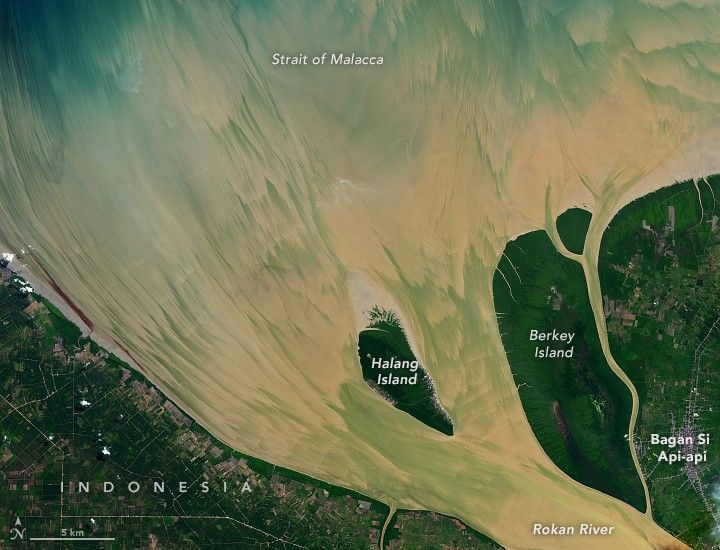

New Timing for Stubble Burning in India
The Rokan River on the Indonesian island of Sumatra flows northeastward for several hundred kilometers from the Barisan Mountains to the Strait of Malacca. Near the river’s mouth, brushstroke-like patterns suggest a tidally active estuary where water and sediment are often in motion.
The OLI (Operational Land Imager) on Landsat 8 captured these images on June 23, 2024. The wide view above shows the northeastern coast of Sumatra along with several islands near the river’s mouth. Particles suspended in the water, such as silt and sand, make the river appear light brown.
Tides and waves are the main factors influencing the distribution of sediment in the estuary. The tidal range here is large, averaging 5 meters (16 feet) around the time of a full Moon, driving powerful currents capable of lifting and moving sediment. The area is also known for its tidal bore—a surge of water that pushes upriver against a current—which can scour the riverbed and carry sediment upstream.
A detailed view of the first image shows the island centered at the river's mouth. The streakiness of the water with its paintbrush-like edges is shown in greater detail. The area of relatively new land at the top of the island is brown and lacks much vegetation.
In these images, sediment-laden water appears to be streaming seaward around Halang Island, shown in the detailed image above. Large tidal ranges and tidal bores likely occurred around when these images were acquired, the day after a full Moon.
Over time, this type of tidal activity can change the shape of shorelines. For example, researchers used Landsat images to show that a high rate of accretion along the island’s north side led to the growth of its shoreline.